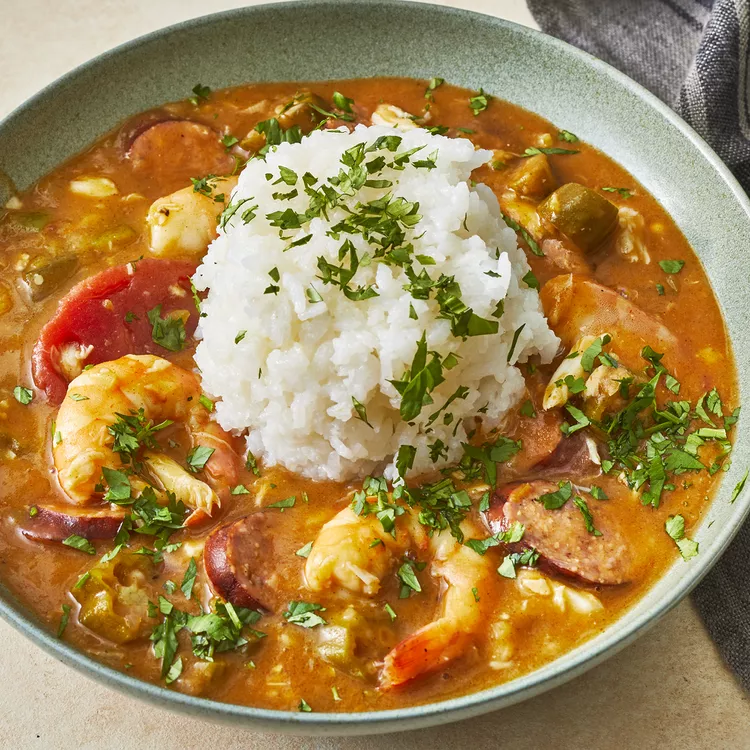

Good New Orleans Creole Gumbo

Description
I am going to give you my Creole gumbo recipe. Most of the time, you
could not get them to write down their recipes because they used a
'pinch' of this and 'just enough of that' and 'two fingers of
water,' and so on. This recipe is a combination of two recipes.
Serve over hot cooked rice. The gumbo can be frozen or refrigerated
and many people like it better the next day. Bon appetit!
What is Gumbo?
Gumbo is one of the most famous dishes to result from Louisiana's
shared Creole-Cajun heritage. Gumbo falls somewhere between a thick
stew and a hearty soup and can contain ingredients such as chicken,
sausage, seafood, okra, tomatoes, and greens. As varied as the
recipes can be, there are a few ingredients that all gumbos have in
common: homemade stock; the "holy trinity" of celery, onions, and
green peppers; and roux.
Ingredients:
- 1 cup all-purpose flour
- 1 cup coarsely chopped celery
- 1 large onion, coarsely chopped
- 1 large green bell pepper, coarsely chopped
- 2 cloves garlic, minced
- 1 pound andouille sausage, sliced
- 3 quarts water
- 6 cubes beef bouillon
- 1 tablespoon white sugar
- salt to taste
-
2 tablespoons hot pepper sauce (such as Tabasco®), or to taste
-
½ teaspoon Cajun seasoning blend (such as Tony Chachere's®), or
to taste
- 4 bay leaves
- ½ teaspoon dried thyme leaves
- 1 (14.5 ounce) can stewed tomatoes
- 1 (6 ounce) can tomato sauce
- 4 teaspoons file powder, divided
- 2 (10 ounce) packages frozen cut okra, thawed
- 2 tablespoons distilled white vinegar
- 1 pound lump crabmeat
- 3 pounds uncooked medium shrimp, peeled and deveined
- 2 tablespoons Worcestershire sauce
Steps:
-
Make the roux: Whisk together flour and 3/4 cup bacon drippings
in a large, heavy saucepan over medium-low heat until smooth.
Cook roux, whisking constantly, until it turns a rich mahogany
brown color. This can take 20 to 30 minutes; watch heat
carefully and whisk constantly or roux will burn. Remove from
heat; continue whisking until mixture stops cooking.
-
Make the gumbo: Place celery, onion, green bell pepper, and
garlic into the work bowl of a food processor, and pulse until
all vegetables are very finely chopped. Stir vegetables into the
roux, and mix in sausage. Bring mixture to a simmer over
medium-low heat, and cook until vegetables are tender, 10 to 15
minutes. Remove from heat and set aside.
-
Combine water and beef bouillon cubes in a large Dutch oven or
soup pot and bring to a boil over medium-high heat. Stir until
bouillon cubes dissolve, then whisk roux mixture into the
boiling water.
-
Reduce heat to a simmer and mix in sugar, salt, hot pepper
sauce, Cajun seasoning, bay leaves, thyme, stewed tomatoes, and
tomato sauce. Simmer soup over low heat for 1 hour; mix in 2
teaspoons of file gumbo powder at the 45-minute mark.
-
Meanwhile, melt 2 tablespoons bacon drippings in a skillet over
medium heat. Add okra and vinegar and cook for 15 minutes;
remove okra with a slotted spoon, and stir into the simmering
gumbo.
-
Mix in reserved vegetables, crabmeat, shrimp, and Worcestershire
sauce, and simmer until flavors have blended, 45 more minutes.
Stir in 2 more teaspoons of file gumbo powder just before
serving.
Homepage